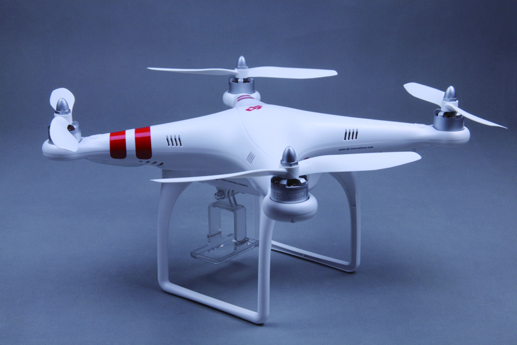

Your browser doesn't support the features required by impress.js, so you are presented with a simplified version of this presentation.
For the best experience please use the latest Chrome, Safari or Firefox browser.
我们的团队
公司成立一年以来，团队由2人增加到17人，其中16人为技术人员。
创始人陈成，28岁，曾就职迅雷，深圳CSDN聚会负责人，4年创业经验。
多名来自著名IT公司的同事，平均年龄25岁，在校期间曾是ACM竞赛，电子竞赛，飞思卡尔智能车竞赛国家级获奖者，有丰富的技术经验和实践积累。
我们的产品
我们专注于智能移动开发和航模的结合，为航模/航拍提供移动智能设备上的软件服务。
我们的开发平台为iOS／Android，使用蓝牙，wifi等技术来控制飞行器，接收航拍图片或视频。
我们的机会
我们和航模/航拍领域最顶尖的企业DJI合作，产品主要面向欧美市场，创新，有趣，想象空间大。
我们和DJI公司共同开发的多款产品已经完成，估计每月能销售数千个软件，将为公司带来数百万的纯利润收益。
同时，自主研发的直升机正在立项，期待你的加入！

合作伙伴：
招聘－资深互联网产品经理
职位描述：
- 设计公司核心产品的功能，绘制原型图。
- 制定公司核心产品的定位、发展方向、及各阶段的规划。
- 挖掘与捕捉用户需求，分析数据，提出产品改进建议或新产品概念。
- 协调设计师与工程师，推动产品的开发。
- 管理产品团队，提供产品咨询，培训同事。
岗位要求：
- 本科或以上学历。
- 3年或以上互联网产品经理的工作经验。
- 较强的协调能力、执行力和表达能力，并能承受压力。
- 较好的数据分析能力及运营意识。
- 有社区/社交网站经验者优先。
招聘－高级Web设计师
职位描述：
- 设计Web产品的UI和交互。
- 配合产品经理与工程师，共同打造优秀的产品。
- 提供设计咨询，培训同事。
岗位要求：
- 本科或以上学历。
- 3年或以上Web设计师的工作经验。
- 熟练使用Photoshop。
- 了解Web重构，即：HTML、CSS。
- 独立创新的风格设定能力。
- 优秀的视觉表达能力。
- 良好的沟通能力。
招聘－iOS/Android工程师
职位描述：
- iOS/Android应用开发。
- 深入研究iOS/Android的SDK，向其他同事提供咨询或培训。
- 配合产品经理与设计师，共同打造优秀的产品。
岗位要求：
- 本科或以上学历。
- 3年或以上编程经验。
- 良好的沟通能力。
- 有iOS/Android工作经验者优先。
招聘－实习生
基本要求：
- 本科大四在读。
- 计算机或者电子等相关专业。
- 有竞赛或者项目经验者优先，我们尤为欢迎参加过ACM竞赛，电子竞赛，智能车竞赛，亚太机器人竞赛等竞赛的同学来我们公司学习交流。
联系我们
陈成：235115827@qq.com
公司详细介绍下载